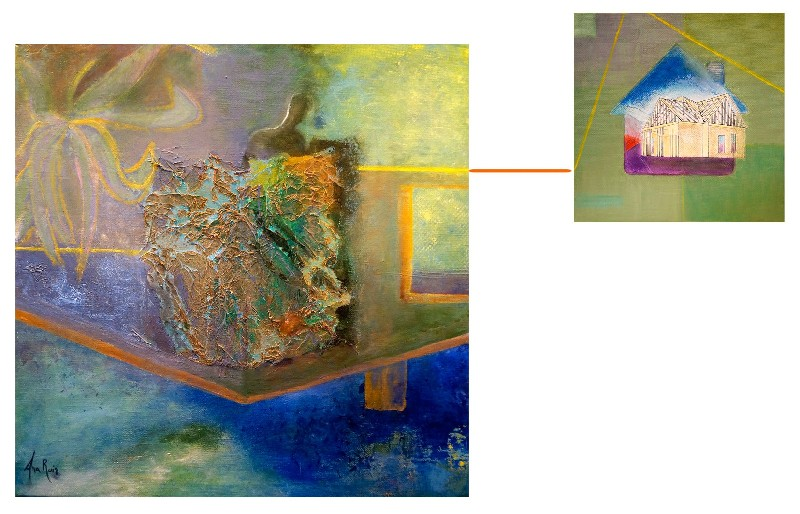
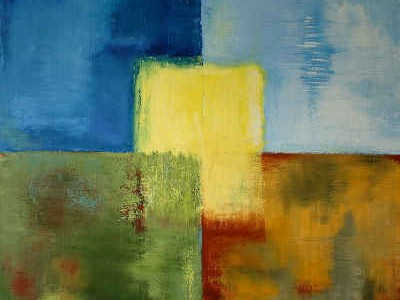

Galeries

Une exploration intérieure, un voyage au cœur de la maison, à la recherche de soi-même.

Cheminer au fil du végétal, dans l’univers mystique du dragonnier, entre mémoire et métamorphose.

Hommage aux artistes, à la création partagée, à la fête et à la fraternité de l’art.

Le corps à l’état brut, la couleur pour seule parure, la nudité comme expression.